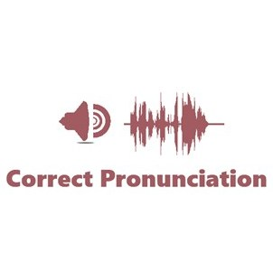
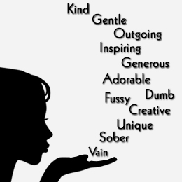
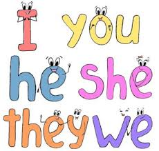
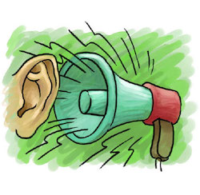

Материалы и инструменты для развития навыков всех видов речевой деятельности
LISTENING

Материалы для транскрибирования:
специальная автоматическая разбивка
предложений на части в целях удобства записи на слух.
видео с динамической формой представления субтитров
Упражнения на основе видео: в транскрипте пропущены слова, которые необходимо вставить.
набор коротких видеосюжетов, иллюстрирующих грамматические конструкции

Прослушивание коротких видео с фиксацией внимания на различные звуки (подготовка к выработке правильного произношения).
READING
Тексты для чтения
Тексты для чтения, снабженные аудио
SPEAKING

Перевод коротких фраз
Перед учеником проходит ряд коротких фраз на русском языке для перевода за очень короткий промежуток времени. Фразы - в виде текста или видео. Ведется запись для проверки преподавателем.

Комментатор
Развите навыков описания картинки или короткого видео. База образов снабжена образцами комментариев, сделанными носителями языка. Однако, главное - импровизация. Ведется запись.

Интервью
Формирование навыков говорения на основе собственных мнений (с предварительным анкетированием). Ученик заранее получает перевод своих мыслей на английский язык. Отвечает на вопросы в режиме записи. Импровизация приветствуется.

Предложения с местоимениями на основе заданных образов
Цель – произнесение предложений с местоимениями на основе заданной конструкции и сменяющихся на экране стационарных образов (I,we, he, she,they).
Предусмотрена запись.

Звуки и образы
Формирование образов без использования слов родного языка. Проверка скорости реакции и запоминания после тренинга. Пример: нужно произнести “thunder”, услышав гром (или "lightning"). Ведется запись.
набор разнообразных упражнений, в основе которых - модификация имеющихся конструкций на базе коротких видео или картинок.
WRITING
НАБОР ТЕКСТА
Развитие навыка набора текста на английском языке.
Для образовательных учреждений, в которых предусмотрена аттестация по результатам выполненных заданий ( программа делает копирование текста невозможным).
ДИКТАНТ
Тренажер для выработки навыка записи на слух. В отличие от аналогичных упражнений этого ресурса акцент делается на способности печатать без ошибок.
Используются только аутентичные аудиоматериалы, но произносятся предложения достаточно медленно для того, чтобы обучаемый сосредоточился на печати.
ДОПОЛНИТЕЛЬНЫЕ РЕСУРСЫ И ИНСТРУМЕНТЫ
idiophrases.com
todo
ARTICLES
TODO
ножницы
todo (Sabir)
коллекция > 30 s
todo (Yury)
OLGA
todo (Yury)